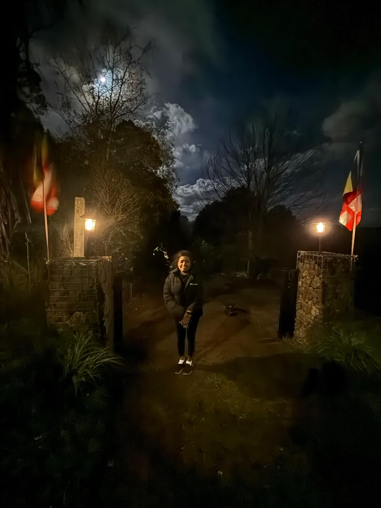
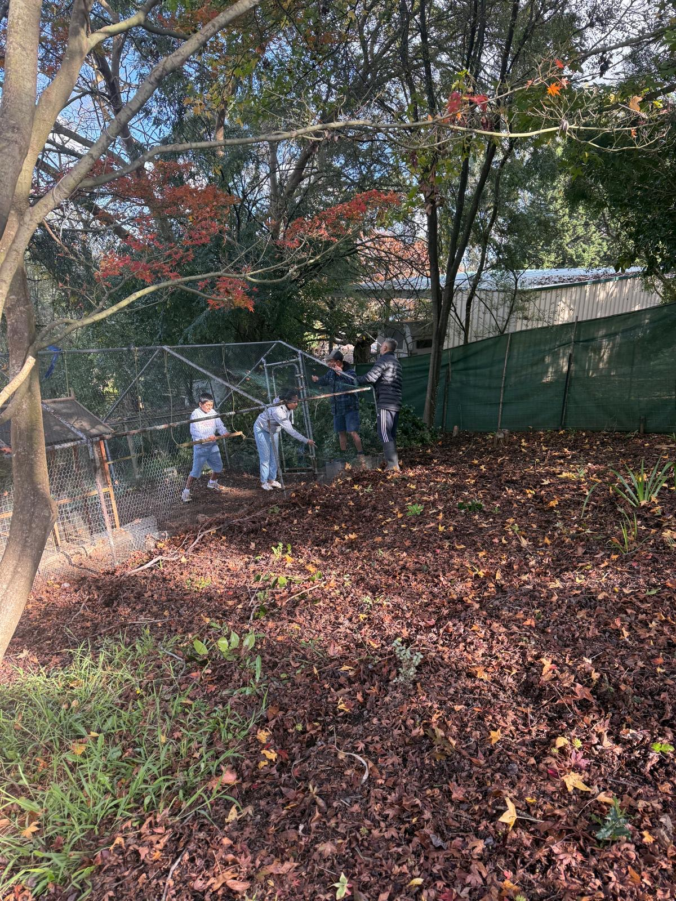
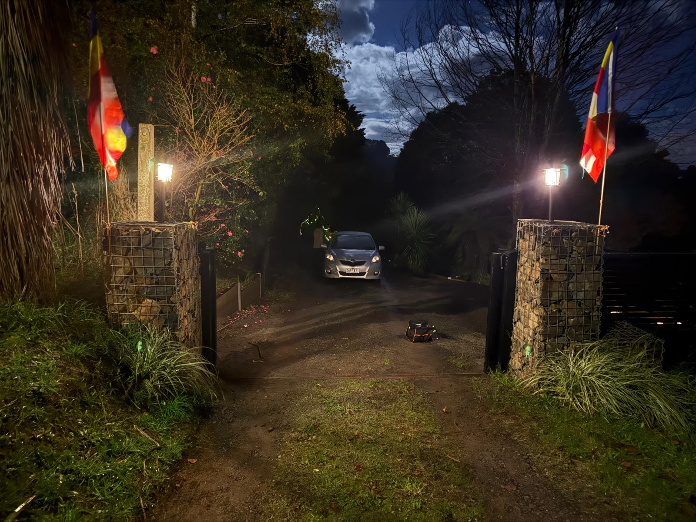
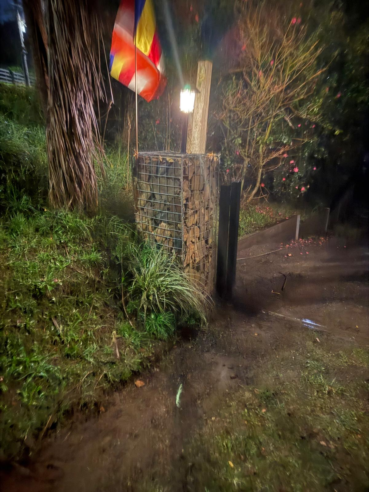
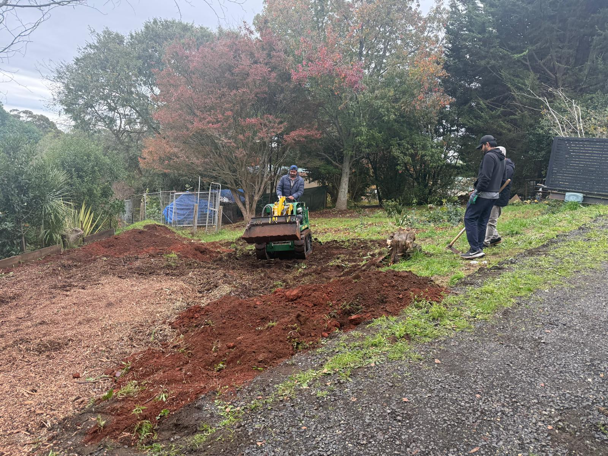
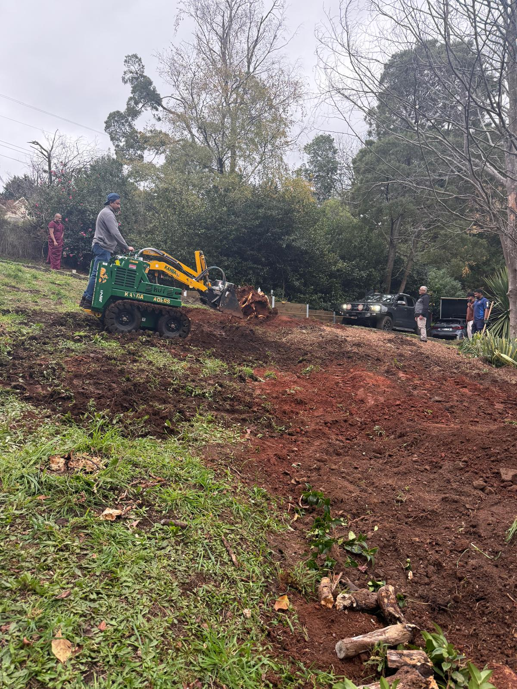

Date: TBD
Venue: English Dhamma Temple, 9 Beenak Road, Gembrook.
Date: 20 june 2026 at 5AM
Venue: English Dhamma Temple, 9 Beenak East Road, Gembrook
The dhamma sermon by Kathnoruwe himi was held on 20th june amidst a large crowd. More than 250 devotees came to the occassion. All listened to the dhamma talk and enjoyed the dinner afterwards organised by English dhamma members.
තෙරුවන් සරණයි



Date: 30 May 2026 at 9AM
Venue: English Dhamma Temple, 9 Beenak East Road, Gembrook
We are organising a ශ්රමදානාය to clean the temple's garden this Saturday. Please come with your own equipment for this great wholesome deed.
Please RSVP to our president your participation. All are welcome! Please spread the workd and bring more devotees for this great event.
තෙරුවන් සරණයි
Date: 24 May 2026
Today, the Old Boys’ Association (OBA) of Maliyadeva College, Kurunegala, organised a volunteer cleaning and labour donation program at the English Dhamma Temple.
Members of the OBA generously dedicated their time and effort to clean, tidy, and improve the temple grounds for the benefit of the community.
A special contribution was made by Mr. Anura Bannaka, husband of Mrs. Janaki Rajaguru, President of the English Dhamma Organisation.
This important improvement has enabled the creation of a much-needed parking area for devotees visiting the temple.
We sincerely express our gratitude to all members of the OBA and everyone who contributed to this worthy initiative.
Their generosity, hard work, and spirit of service have greatly benefited the English Dhamma Temple and its community.
We wish them continued success, good health, and happiness in all their future endeavours.
May the merits of this wholesome deed bring blessings to all who participated.





Date: 17 May 2026
Today we successfully held the kids සිල් program. A big thank to who provided දානය, who volunteered with decorating and who helped during the program. A special note on parents’ commitment as there were many flower baskets, candles and vesak lanterns; really appreciate your devotion. ❤️
The program started by venerable Nandarathana thero helped kids undertake 8 precepts. Then the thero conducted a calming and relaxing meditation session which included compassion meditation and breathing meditation. It was astounding to see the silence in the hall as kids deeply involved in the meditation.
Then the දානය was offered and kids after the ප්රත්යවේකශාව had the meal. The parents eagerly helped the kids with දානය.
After a quick stretching and wash room break the second session started. The teacher quickly elaborated the merits gained in today’s observing of සිල් which are listed below.
1. සිල්
2. listening to preaching
3. දිට්ටුජුකම්ම sharpening the dhamma knowledge
4. පත්තානුමෝදනා rejoicing the merits done by parties sponsored the දානය
5. honouring the suitable
And the volunteers and sponsors gained below merits.
1. දානය
2. ශ්රම දානය
3. listening to sermons
4. rejoicing other’s merits
5. honouring the suitables
It was noted that Nimesha came dressed up with සිල් attire and followed whole program. She may accumulate merit by observing සිල් too.
The two teeny tiny little boys of sumedha and nimesha provided some endearing distractions to the සිල් observants which was adorable. 🥰
In the final session reverend preached a out how to eliminate flaws within ourselves not letting them to become afflictions in our path to නිබ්බාන. Then he went ahead to explain the lord budhdha’s supremacy in විශාලා මහනුවර which eliminated the තුන් බිය and power of රතන සූත්රය.
That concluded our event and thanks to everyone volunteered to clean the hall we went our merry ways to our merry homes.
Any feedback, comments are as always welcome.
Please send your kids to the Sunday school next week as usual.
Date: 10 May 2026 Today we successfully wrapped up making lanterns commemorating vesak festival. It’s coincidental that Mother’s Day was also today. It was very pleasant to see most of the kids enrolled were present today. I think only Shanon, and Nelly was absent. Nelly is not well and we wish fast recovery! We started the day by recalling the kids today is Mother’s Day and we recited the දස මාසෙ උරේ කත්වා pali stanza together. Lyon and Rachel sang the stanza from memory which was great to witness. Please recite it with your kids. We have taught it; reciting few times they’ll remember it. Then started the main event, making lanterns. Kids came prepared and we applause the parents who amidst busy schedule were able to send with what they require to make lanterns. Kids were pretty much eager making lanterns and parents who volunteered made it wasy for the teachers to help kids with their lantern making. Our gratitude goes to Pavithra, Ashi, Madhavi, Nimesha, Vihani, Lakshika and our junior school teacher whonworked with the kids to make lanterns. The elder kids Tinaya, Sandy, Nemitha and Even helped the little kids and saw Nem busy with her lantern focussing totally on it and enjoying it. Janaki akka and two reverences visited the class and we offered seelawimala thero who is going back to Sri Lanka tomorrow some candy and all the kids worshipped him and say සාදු සාදු appreciating his presence and guidance he offered in his tenure withe temple. The recess started at 3pm and we had a birthday celebration of Ranjeeva one of the teachers allowed kids to enjoy birthday cake. After the break kids continued with the activity and at 3:50 we started packing up. Kids did a wonderful job and were asked to complete the lanterns back at home. Once again a big thanks to parents and kids who helped to make the event a success.
Date: 9 April 2026 We successfully wrapped up our excursion and, most importantly, managed to return all your wonderful children safely back to their sweet homes. Our day began at Berwick Station, where we gathered together and boarded the 8:40am train to Caulfield. From there, we changed trains and travelled onwards to Parliament Station. After arriving in the city, we found a peaceful spot near Parliament House where the children enjoyed the snacks they had brought from home. Nimesha kindly distributed nuggets and garlic bread to everyone, while the adults and reverends enjoyed a relaxing coffee from a nearby café. We then made our way towards Parliament House. The children behaved exceptionally well throughout the journey, making it very easy for the adults to guide and supervise the group. A special thank you goes to our consultant, Janaki Akka, who had organised our Parliament entry in advance, allowing us to pass through smoothly and efficiently. Jenaru and his mother joined us near Parliament House, and the children warmly welcomed him into the group. After completing the security checks, we were introduced to our tour guide, who accompanied us throughout the visit and shared many fascinating facts about the Parliament and its history. Our guide was truly exceptional. He explained the parliamentary process in a very engaging and interactive manner, especially demonstrating how a bill is passed through Parliament. The children particularly enjoyed the role-play activities he organised. He showed us how debates take place in the green chamber and how voting occurs in the red chamber. The children learned how, once approved, a bill is formally signed by the Governor. We were also taken through the Parliament library, where the guide explained the enormous collection of books and historical information stored there. Another interesting fact shared during the tour was that parts of Parliament House are decorated with real gold valued at approximately 12 million dollars, while the chandeliers are made of genuine crystal. We were also honoured by the presence of Honourable Member of Parliament Lee Tarlamis, who kindly joined our excursion for a short time. Both the children and adults were excited to take several group photographs with him, and we sincerely thank him for taking the time to meet our group. After the Parliament tour, a few children departed early with their parents. The rest of us slowly made our way towards Melbourne Central Station. Conveniently, McDonald’s was located along our route, giving everyone an opportunity to enjoy lunch before catching the train home through the new Metro Tunnel. Janaki Akka generously treated everyone to their favourite McDonald’s meals, and the two reverends also joined us for lunch. We were also pleased to have our new junior school teacher, Pradeepa, join the excursion during the morning refreshments, and we thank her warmly for her presence and support. Following lunch, we boarded the Pakenham train for our journey home. Thankfully, the train was not crowded, allowing the children to relax and enjoy themselves. The return trip was filled with games, cheerful conversations, laughter, and friendly challenges among the children, which became one of the highlights of the day. As the journey came to an end, Janaki Akka departed at Berwick Station, while a few of us, including myself, got off at Officer Station. Last but certainly not least, Eranda travelled with the remaining four children and safely accompanied them to Cardinia and Pakenham Stations respectively. Overall, the excursion was a wonderful success. We sincerely thank all the parents, volunteers, teachers, and reverends who supported the day and helped make it memorable for the children. We would greatly appreciate your feedback and comments, as they are very valuable to us and help us improve future excursions and activities.